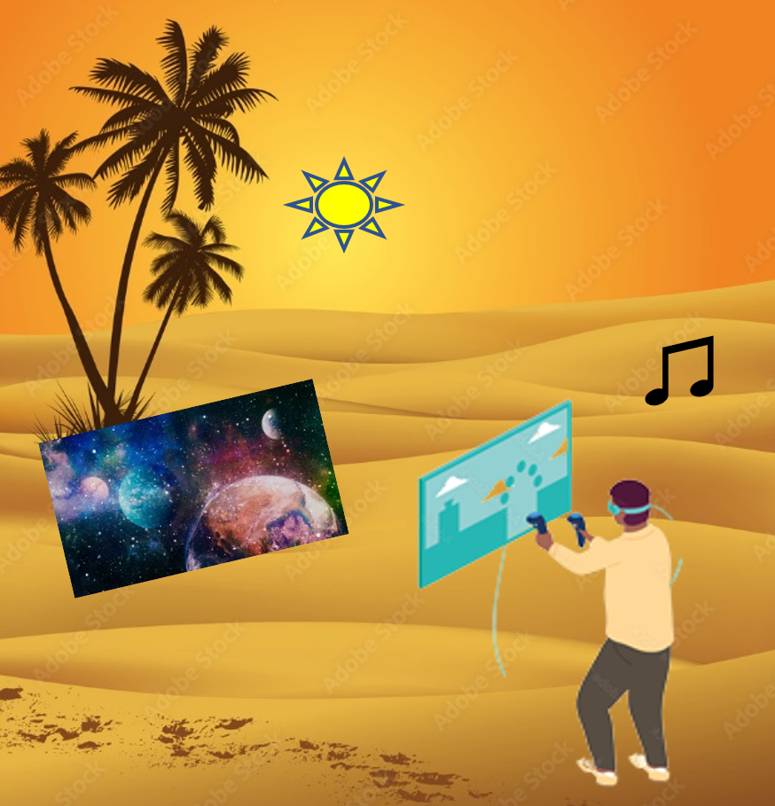

Conceitos Básicos
Este tutorial aborda basicamente uma aplicação em realidade virtual e uma linguagem de marcação (tag):
AMUSE VR
MultiSEL
AMUSE VR
O AMUSE VR foi projetado focada em tecnologias de equipamentos vestíveis de realidade virtual, e com elas, visa suportar ambientes imersivos com conteúdo de mídias 2D, 360° e efeitos sensoriais.
O AMUSE VR foi desenvolvido por mim durante as pesquisas no doutorado com objetivo de demonstrar viabilidade da aplicação da minha proposta de pesquisa, onde foi proposto que é possível desenvolver aplicações autorais para projetos interativos em ambientes totalmente imersivos, usando a tecnologia de realidade virtual e sem a necessidade de equipamentos tradicionais como teclados e mouse.
O público alvo da ferramenta, são museus que apresentem conteúdo interativo, cinemas multissensoriais (chamados 4D) e até mesmo parque de diversões.
Características
A seguir um vídeo de demonstração da ferramenta.
Atualmente aplicação funciona com os óculos de realidade virtual Oculus Quest 2, juntamente com o par de controles do equipamento.

O controle na mão esquerda, fica responsável por apresentar todos os menus e todas as ações disponíveis em modo autoria.
Já o controle da mão direita, fica responsável por posicionar os objetos no ambiente virtual e alterar a apresentação das mídias e efeitos sensoriais da apresentação.
MultiSEL
A MultiSEL é uma linguagem XML baseada no Modelo MultiSEM, a mesma foi idealizada com objetivo de focar em projetos Mulsemídia (multimídia + efeitos sensoriais), além de dar suporte a conteúdo em 360° e realidade virtual.
MultiSEL é uma linguagem que foi criada no centro de pesquisa MIDIACOM pelo Dr. Douglas Matos e Dra. Débora Christina Muchaluat Saade e posteriormente atualizada por mim,esta linguagem, é baseada em outras linguagens como NCL e SMIL, portanto utilizando algumas técnicas destas citadas, como por exemplo, relacionamentos temporais entre mídias, portas e outras características.
A finalidade do MultiSEL pode ser equivalente a do AMUSE VR, porém, por ser uma linguagem de marcação, pode ser criada e editada em qualquer ferramenta de edição textual, assim como um XML. Possibilitando posteriormente a importação no AMUSE VR ou ferramenta de terceiros.
Porém seu uso, exige mais experiencia e imaginação prévia de um cenário interativo em 3D por parte do autor ao criar cenários multimídia sem um feedback visual.
Por ser tratar de uma linguagem de marcação nova, foi desenvolvido esse primeiro tutorial sobre MultiSEL focado na compatibilidade com AMUSE VR.
Para usar este tutorial, acesse os menus a cima para navegar a vontade e assim que se sentir confortável e confiante sobre o entendimento da linguagem, retorne a página principal do experimento na aba anterior.